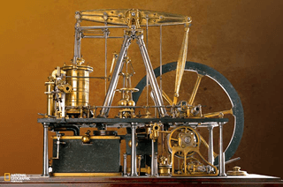
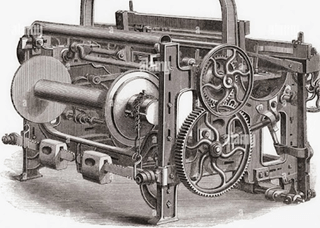
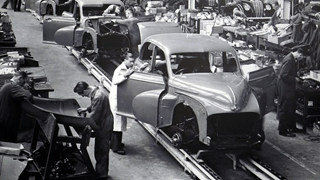
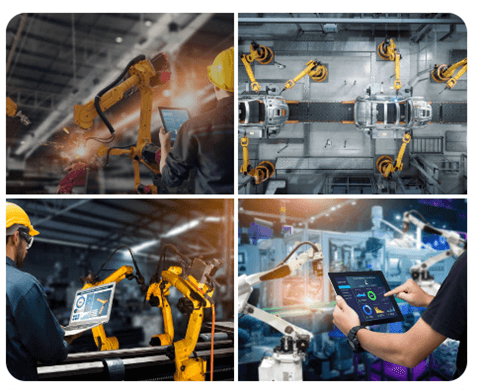
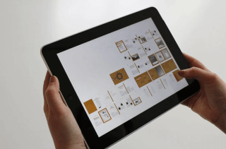

Texto 07 - Industrialização mundial I. Do meio natural ao meio técnico
Conteúdo: Meio natural; Meio técnico; Revolução Industrial; Divisão Internacional do Trabalho; Tipos de indústrias;
Objetivo: Estudar a formação do meio técnico e identificar suas características fundamentais. Relacionar tais características ao processo de industrialização.
Digite seu nome
Introdução
Na aula passada, mergulhamos no processo de avaliar o desenvolvimento dos países, tarefa nada fácil.
Hoje, vamos embarcar em uma jornada fascinante pela história da industrialização mundial e suas profundas transformações geográficas. Ao longo do tempo, a humanidade tem testemunhado mudanças significativas no modo como produzimos bens, organizamos nossas sociedades e interagimos com o meio ambiente.
Nesta aula, exploraremos os diferentes estágios desse processo, desde a formação do meio técnico até os impactos das revoluções industriais em escala global.
Meio Natural e Meio Técnico
Ao longo da história, o ser humano tem exercido um papel fundamental na modificação do meio natural para criar o meio técnico necessário ao desenvolvimento industrial. Um exemplo marcante é a canalização de rios para a geração de energia hidrelétrica, um processo utilizado em diversos países, como Brasil, China e Canadá. Essa transformação do curso dos rios não apenas fornece energia limpa e renovável, mas também influencia diretamente o ambiente ao redor, alterando ecossistemas aquáticos e terrestres.
Outro exemplo é o desmatamento para abrir espaço para áreas industriais. Países como Estados Unidos, Rússia e Brasil têm enfrentado o desafio de equilibrar a expansão industrial com a preservação ambiental. A Amazônia, por exemplo, tem sido alvo de intensa exploração industrial, levando a preocupações sobre o impacto na biodiversidade e no clima global.
Fonte: pexels.com
A extração de recursos minerais também desempenha um papel crucial no desenvolvimento industrial. Países como Austrália, Chile e África do Sul são importantes produtores de minerais utilizados na fabricação de produtos industrializados. No entanto, essa exploração muitas vezes gera conflitos socioambientais, como os observados em regiões de mineração na África, onde comunidades locais enfrentam desafios relacionados à poluição e ao deslocamento.
Fonte: pexels.com
Se liga nesse conceito!
Meio natural
Quando tudo era meio natural, o homem escolhia da natureza aquelas suas partes ou aspectos considerados fundamentais ao exercício da vida, valorizando, diferentemente, segundo os lugares e as culturas, essas condições naturais que constituíam a base material da existência do grupo.
O meio técnico
O período técnico vê a emergência do espaço mecanizado. Os objetos que formam o meio não são, apenas, objetos culturais; eles são culturais e técnicos, ao mesmo tempo. Quanto ao espaço, o componente material é crescentemente formado do "natural" e do "artificial". Mas o número e a qualidade de artefatos variam. As áreas, os espaços, as regiões, os países passam a se distinguir em função da extensão e da densidade da substituição, neles, dos objetos naturais e dos objetos culturais, por objetos técnicos. Santos, Milton. A Natureza do Espaço.
Revolução Industrial
A Revolução Industrial teve origem na Inglaterra do século XVIII e se espalhou pelo mundo, transformando radicalmente as sociedades e economias. Um exemplo emblemático é o desenvolvimento da máquina a vapor por James Watt, que impulsionou a produção em larga escala e a expansão das ferrovias, ampliando as conexões entre diferentes regiões e países.

Fonte: pexels.com
As repercussões da Revolução Industrial foram globais, afetando países em todos os continentes. Nos Estados Unidos, por exemplo, a Revolução Industrial estimulou o crescimento econômico e a expansão territorial, com a construção de ferrovias e a consolidação de indústrias como a siderúrgica e a automobilística. Na Alemanha, a Segunda Revolução Industrial trouxe avanços significativos na indústria química e na produção de aço, contribuindo para a ascensão do país como potência industrial.
Conectando com a última aula sobre globalização, podemos observar como a Revolução Industrial foi um catalisador para o processo de globalização. O surgimento de novas tecnologias e métodos de produção facilitou a integração econômica e a circulação de mercadorias em escala mundial. Além disso, a demanda por recursos naturais e mão de obra barata impulsionou o colonialismo e o comércio internacional, estabelecendo conexões cada vez mais complexas entre os países. Assim, podemos entender a Revolução Industrial como um marco histórico que não apenas transformou as relações de produção, mas também moldou a geografia econômica e política do mundo contemporâneo.
As Revoluções Industriais: Mudando o Mundo
Neste tópico, vamos explorar as três principais revoluções industriais e seu impacto na transformação do mundo:
Primeira Revolução Industrial:
A Primeira Revolução Industrial marcou o início da era moderna, iniciando-se na Inglaterra do século XVIII. Com a introdução da máquina a vapor e a mecanização da produção têxtil, a forma como os bens eram produzidos mudou drasticamente. Exemplo disso é a invenção do tear mecânico por Edmund Cartwright, que aumentou significativamente a velocidade de produção de tecidos. O impacto da Primeira Revolução Industrial foi sentido não apenas na esfera econômica, mas também na social, com o surgimento de novas classes sociais, como a burguesia industrial, e o crescimento das cidades devido à migração do campo para as fábricas nas áreas urbanas.

Tear mecânico de Edmund Cartwright. Fonte: pexels.com
Segunda Revolução Industrial:
A Segunda Revolução Industrial, ocorrida no final do século XIX até a década de 1970, foi impulsionada por avanços como eletricidade, petróleo e aço. A eletricidade, por exemplo, permitiu a automação de processos industriais, enquanto o petróleo e o aço foram essenciais para o desenvolvimento de novos setores industriais, como o automobilístico e o químico. Países como Estados Unidos, Alemanha e Japão foram os principais protagonistas desse período, que testemunhou uma rápida urbanização e um aumento sem precedentes na produção em massa. A Segunda Revolução Industrial também foi marcada pela intensificação da competição entre potências industriais e pelo surgimento de movimentos trabalhistas em busca de melhores condições de trabalho.

Fonte: pexels.com
Terceira Revolução Industrial:
A Terceira Revolução Industrial, também conhecida como Revolução Técnico-Científica, teve início na segunda metade do século XX com o advento da revolução digital e das tecnologias da informação. A computação, a internet e a robótica revolucionaram completamente os processos de produção, distribuição e consumo, levando à automatização de tarefas e ao surgimento de novos modelos de negócios. Empresas como Google, Apple e Microsoft se tornaram gigantes globais, enquanto países como Estados Unidos, Japão e China lideraram o desenvolvimento tecnológico nesse período. A Terceira Revolução Industrial também promoveu mudanças significativas na organização do trabalho, com a ascensão do trabalho remoto e da economia digital.

Fonte: pexels.com
Essas três revoluções industriais não apenas mudaram a face da indústria, mas também redefiniram o curso da história humana, moldando o mundo moderno em que vivemos.
Classificação das Indústrias: Uma Visão Abrangente
Neste tópico, vamos explorar as diversas maneiras de classificar as indústrias:
Quanto ao Fator Histórico:
Ao longo da história, as indústrias passaram por diferentes estágios de evolução, refletindo mudanças nos métodos de produção e organização do trabalho. Começando pelo artesanato, onde a produção era manual e descentralizada, passando pela manufatura, que envolvia a divisão do trabalho e a produção em larga escala em oficinas, até chegar à maquinofatura, onde máquinas e processos mecanizados dominam a produção em fábricas. Essa evolução ilustra como a tecnologia e a organização do trabalho moldaram o desenvolvimento industrial ao longo dos séculos.
Quanto ao Desenvolvimento Tecnológico:
As indústrias também podem ser classificadas de acordo com o nível de tecnologia empregada em seus processos produtivos. Desde a manufatura, que utiliza máquinas simples e processos semiautomatizados, até a indústria 4.0, caracterizada pela integração de tecnologias avançadas como inteligência artificial, internet das coisas e robótica, as diferentes fases refletem a constante busca por eficiência e inovação na produção industrial. Exemplos disso são as fábricas inteligentes, onde máquinas e sistemas se comunicam e se auto otimizam, aumentando a produtividade e reduzindo custos.

Fonte: pexels.com
Quanto à Finalidade dos Bens Produzidos:
As indústrias também podem ser classificadas de acordo com a finalidade dos bens que produzem. As indústrias de consumo não durável fornecem produtos de curta duração, como alimentos e produtos de higiene pessoal. Já as indústrias de consumo durável produzem bens que têm uma vida útil mais longa, como eletrodomésticos, veículos e móveis. Por fim, as indústrias de bens de produção fornecem os equipamentos e maquinários necessários para a fabricação de outros bens, como máquinas industriais, ferramentas e equipamentos agrícolas. Essas diferentes categorias refletem as diversas necessidades e demandas da sociedade, demonstrando a variedade e a complexidade do setor industrial.
Os Fatores de Produção na Indústria: Elementos Essenciais
Neste tópico, vamos explorar os principais fatores que impulsionam a produção industrial:
Capital
O investimento de capital desempenha um papel crucial na produção industrial, fornecendo os recursos financeiros necessários para construir fábricas, adquirir equipamentos modernos e tecnologicamente avançados, além de financiar pesquisas e desenvolvimento de novos produtos. Países e regiões que possuem acesso a um grande volume de capital tendem a ter indústrias mais desenvolvidas e competitivas no cenário global.
Energia
A energia é essencial para impulsionar os processos produtivos na indústria. Fontes tradicionais de energia, como petróleo e carvão, são amplamente utilizadas em fábricas e indústrias ao redor do mundo. No entanto, o aumento da conscientização ambiental tem impulsionado a busca por fontes de energia mais limpas e renováveis, como a energia solar e eólica, que estão sendo cada vez mais adotadas pela indústria.
Matéria-Prima
A disponibilidade e o acesso a matérias-primas desempenham um papel crucial na localização e no desenvolvimento das indústrias. Regiões ricas em recursos naturais, como minerais, metais e produtos agrícolas, tendem a atrair investimentos industriais devido à facilidade de acesso a matéria-prima. No entanto, a dependência excessiva de recursos naturais pode levar à exploração descontrolada e à degradação ambiental.
Mão de Obra
Os trabalhadores são um dos pilares fundamentais da produção industrial. A disponibilidade de mão de obra qualificada e produtiva influencia diretamente na eficiência e competitividade das indústrias. Investimentos em educação e treinamento são essenciais para desenvolver uma força de trabalho capacitada e adaptável às demandas do mercado.
Resumindo
O meio natural foi transformado ao longo dos séculos para dar lugar a um espaço geográfico mecanizado, onde a produção industrial é a principal atividade econômica. Essa transformação trouxe consigo uma série de problemas, como a degradação ambiental, a poluição do ar e da água, o esgotamento de recursos naturais e o aumento das desigualdades sociais. No entanto, também trouxe avanços significativos, como o aumento da produtividade, a melhoria das condições de vida e o desenvolvimento de novas tecnologias e inovações. Podemos fazer uma correlação com o jogo digital "SimCity", onde os jogadores assumem o papel de prefeitos e urbanistas, construindo e gerenciando cidades em um ambiente virtual. O jogo aborda questões relacionadas ao desenvolvimento urbano, incluindo a industrialização, e os desafios associados a ela, como a gestão de recursos naturais, a poluição e o bem-estar da população.
O desejo de entender o mundo é o que nos impulsiona a descobrir as maravilhas da ciência.
P:
Como a Revolução Industrial impactou diretamente o meio ambiente, considerando tanto os benefícios quanto os problemas decorrentes desse processo?
R: A Revolução Industrial trouxe uma série de transformações significativas para o meio ambiente. Por um lado, houve avanços tecnológicos e melhorias na qualidade de vida, como o acesso a novos produtos e serviços. Por outro lado, o rápido crescimento industrial resultou em problemas ambientais graves, como a poluição do ar, da água e do solo, além do desmatamento e da degradação de ecossistemas naturais. Esses impactos continuam a ser desafios contemporâneos, ressaltando a importância de abordagens sustentáveis para o desenvolvimento industrial.
P:Qual é o papel das fontes de energia na indústria moderna, e como a transição para fontes renováveis pode influenciar o futuro da produção industrial?
R: As fontes de energia desempenham um papel fundamental na indústria moderna, impulsionando os processos produtivos e fornecendo a energia necessária para alimentar máquinas e equipamentos. Atualmente, há um crescente interesse e investimento em fontes de energia renováveis, como solar, eólica e hidrelétrica, devido à preocupação com os impactos ambientais das fontes de energia tradicionais, como o petróleo e o carvão. A transição para fontes de energia mais limpas e sustentáveis pode não apenas reduzir os impactos ambientais da indústria, mas também abrir novas oportunidades de inovação e desenvolvimento tecnológico.
P:
Como as mudanças na organização do trabalho ao longo das revoluções industriais influenciaram a vida das pessoas e as relações sociais dentro das comunidades?
R:
As revoluções industriais não apenas transformaram os processos de produção, mas também redefiniram as relações sociais e econômicas dentro das comunidades. Com a mecanização e a automação, houve uma mudança significativa na natureza do trabalho, com a substituição de empregos manuais por empregos mais especializados e, posteriormente, por empregos na área de serviços e tecnologia. Isso impactou diretamente a dinâmica social, gerando novas classes sociais, como a classe trabalhadora industrial, e contribuindo para o surgimento de movimentos sociais e sindicatos em busca de melhores condições de trabalho e direitos trabalhistas.
Agora é com você!
Vamos exercitar nosso conhecimento sobre o texto que estudamos hoje. Cada um de vocês deverá criar duas questões sobre algum tópico presente no texto. Cada questão deve conter, no mínimo, três argumentos para ser considerada satisfatória. Após finalizar, entregue a questão para o seu colega ao lado responder.
Desafio - Jornada do herói: O Encontro com o Mentor
Nessa fase, o herói recusa o chamado para à aventura, mas as vezes não é má ideia, até que se tenha tempo para
sentir-se preparado para tomar o rumo da “região desconhecida” que está à espera.
Nesta aula, vamos conhecer o Encontro com o Mentor, que será à ajuda necessária que o herói precisará
para atingir seus objetivos.
Como sempre, formem seus grupos e use a criatividade para lidar com esse desafio.
Instruções
Forme um grupo com 5-6 estudantes;
Leia o texto abaixo e discuta com seu grupo o conteúdo das questões;
Faça anotações em seu caderno;
Seja criativo, use os conhecimentos que você já possui sobre o Desafio.
Tempo da atividade: 25 minutos.
O Encontro com o Mentor (4)
Leia a passagem abaixo:
“Vocês, Buscadores, temerosos no início da aventura, consultem-se com os anciãos de Nossa Tribo.
Procurem aqueles que já partiram antes. Aprendam as histórias secretas das fontes de água, das
trilhas de caça, das moitas de frutas e saibam onde ficam as terras más, as areias movediças, os
monstros a evitar. Alguém muito velho, fraco demais para ir conosco desenha para nós um mapa na
poeira do chão. O xama da tribo, em seguida, nos entrega alguma coisa, um presente mágico, um
talismã poderoso que vai nos proteger e guiar durante a busca. Agora podemos partir com o coração
mais leve e confiante porque levamos conosco a sabedoria acumulada de Nossa Tribo”.
O trecho destaca aquilo que existe em praticamente todas as histórias em todas as civilizações, seja na
mitologia, folclore ou mesmo na vida cotidiana: a figura sábia e protetora do Mentor.
O Mentor é aquele que ajuda, orienta, treina ou fornece dons ou presentes mágicos para o herói cumprir
sua jornada.
Aloy, em no jogo Horizon Zero Dawn, segue seu caminho ao lado de seu tutor Rost e aprende a
sobreviver no mundo pós-apocalíptico onde máquinas hostis dominam a natureza mil anos no futuro.
Nos quadrinhos, o professor Charles Xavier é o mentor e fundador dos X-Men, cujo sonho é a convivência
pacífica entre humanos e mutantes.
Já Luke Skywalker possui alguns mentores na sua jornada em Star Wars, como Obi-Wan Kenobi e o
mestre Jedi Yoda, os quais procuram ensinar a Luke como descobrir e lidar com a Força.
O Encontro com o Mentor é o estágio da Jornada do Herói em que este recebe provisões, o conhecimento e a
confiança necessários para superar o medo e começar sua aventura.
Fontes de sabedoria
Mesmo se não houver um personagem concreto a desempenhar as muitas funções do arquétipo do Mentor, Os heróis sempre entram em contato com alguma fonte de
sabedoria antes de se lançarem numa aventura.
×
Arquétipo é um conceito da psicologia utilizado para representar padrões de comportamento
associados a um personagem ou papel social. A mãe, o sábio e o herói são exemplos de
arquétipos. Esses “personagens” têm características percebidas de maneira semelhante por
todos os seres humanos. Esse conceito foi desenvolvido por Carl G. Jung, psiquiatra suíço e
fundador da psicologia analítica. Para Jung, esses comportamentos estão no inconsciente
coletivo e, por isso, são percebidos de maneira similar por todos. Jung dizia que os
arquétipos são uma herança psicológica, ou seja, resultam das experiências de milhares de
gerações de seres humanos no enfrentamento das situações cotidianas. A partir do conceito de
Jung, desenvolveu-se uma classificação com 12 arquétipos que simbolizam algumas motivações
básicas dos seres humanos: Sábio, Mago, Explorador, Criador, Herói, Rebelde, Amante, Tolo,
Cuidador, Homem comum, Inocente e Governante.
Pode ser a experiência do que já partiram numa busca antes deles, ou pode ser que olhem para dentro de
si mesmos, em busca da sabedoria pela qual já pagaram caro, em aventuras anteriores. O Encontro com o
Mentor é um momento rico na história e para desenvolver o conflito. Todo mundo já teve uma experiência
com um Mentor ou um modelo, a fim de desempenhar determinado papel.
Mentores no folclore e no mito
Desde a proteção mágica ou quando elfos ajudam os animais, contos de fadas, proteção dos deuses e deusas
são todas projeções do arquétipo de Mentor ajudando o herói.
Na mitologia os heróis procuram o conselho de bruxas, magos, feiticeiros, espíritos e deuses de seus
mundos. Na mitologia grega é famosa a figura do centauro Quíron, metade homem e metade cavalo. Quíron
guiou Hércules no seu aprendizado e faz a ponta entre o humano e os poderes superiores da natureza.
Mentor em pessoa
O termo Mentor vem de uma personagem em Odisseia de Homero. Era o amigo leal de Ulisses ou Odisseu, a
quem este confiou a responsabilidade de educar seu filho Telêmaco, enquanto Odisseu fazia sua longa
viagem de volta da Guerra de Troia. Mentor deu seu nome a todos os guias e preceptores, mas na verdade é
Atena, a deusa da sabedoria, quem age para trazer à história a energia do arquétipo de Mentor.
Evitando os clichês de Mentor
É muito fácil cair nos estereótipos e clichês dos comportamentos dos velhos sábios que já são conhecidas
através de milhares de histórias. Para evitar isso, desafie os arquétipos do homem de barba branca ou
fadas-madrinhas.
Engano
A vida pode ser marcada pela instabilidade e nem sempre o mentor pode ser o “bonzinho” da história. Ele
pode enganar o herói ou para aliciá-lo para uma vida de crimes.
Conflitos entre Mentor e Herói
A relação entre herói e mentor pode assumir contornos trágicos desde a existência de um mentor corrupto
como de um herói violento e sem escrúpulos. Dependendo da história, ela pode girar em torno do mentor. O
mentor pode ser uma evolução do herói, pois sobreviveu a diversas experiências na jornada do herói.
Enfim, com o mentor presente ou esporadicamente participante da história, sua presença pode ajudar o
herói a vencer o medo e o levar ao limite da aventura, ao estágio seguinte da Jornada do Herói, a
Travessia do Primeiro Limiar.
Questões para discutir:
Pense em alguns jogos, eles possuem mentores?
Quais funções de Mentor podem ser encontradas e desenvolvidas em sua história? Seu herói precisa de um
mentor?
Seu herói tem algum código íntimo de ética, ou modelo de comportamento? Seu herói tem consciência das
situações? Como ela se manifesta?
Qual a atitude do herói em relação à energia do Mentor?
SANTOS, Patrícia Cardoso dos (et al.). Enciclopédia do Estudante: geografia do Brasil:
aspectos físicos, econômicos e sociais. São Paulo: Moderna, 2008.
SANTOS, Milton. A Natureza do Espaço: técnica e tempo, razão e emoção. São Paulo: EDUSP, 2002.
VESENTINI, José William. Geografia: o mundo em transição. Ensino médio. 2. ed. – São
Paulo: Ática, 2013.
VOGLER, Christopher. A jornada do escritor: estruturas míticas para escritores. Tradução de
Ana Maria Machado. -
2.ed. Rio de Janeiro: Nova Fronteira, 2006.
SKOLNICK, Evan. Video game storytelling: what every developer needs to know about narrative
techniques.